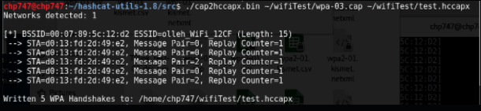
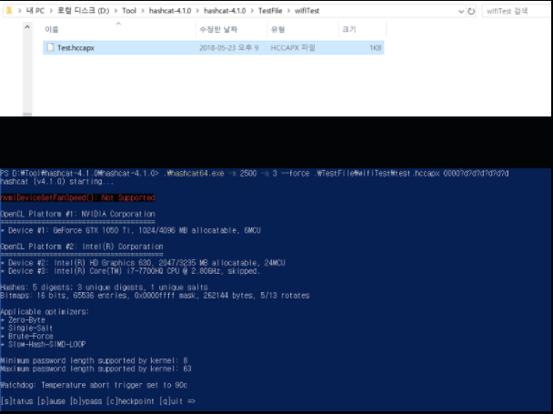
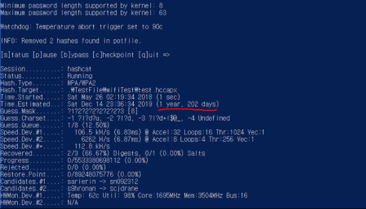
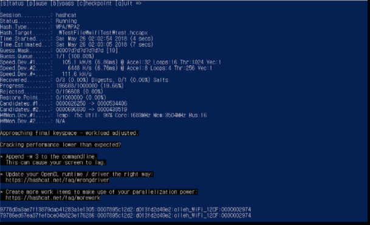

실습과정 3

hccapx 파일로 잘 변환이 되었으면, 이제 hashcat 을 이용하여 key guessing 을 시작해 봅시다. 로컬 상에서는 GPU 연산을 활용할 수 없기 때문에 호스트 PC에서 hashcat 을 사용합니다.

해당 옵션들은 대충 -m 2500은 WPA2 프로토콜에 관련된 암호화 방식이라는 표현과 -a 3은 brute-force attack을 사용하겠다는 옵션들입니다.
뒤의 0000?d?d?d?d?d?d 는 패스워드인데 앞에 0이 4개 있고, 숫자로 6자리라는 뜻입니다. 아예 모른다는 것을 전제로 진행하는 것도 좋겠으나, 시간이 너무 오래 걸리는 관계로 패스워드의 일부를 주고 시작했습니다.

패스워드에 대한 힌트를 주지않고 크래킹을 할 경우 1년이상의 시간이 걸린다고 나와있습니다.

전수조사할 범위를 잘 줄여서 던져주면 아래와 같이 빠르고 신속하게 비멸번호가 위 그림의 밑 부분과 같이 무선랜의 패스워드가 크래킹 된걸 확인할 수 있습니다.